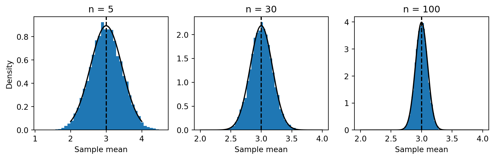
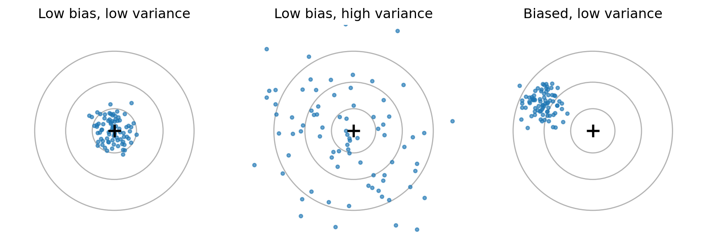
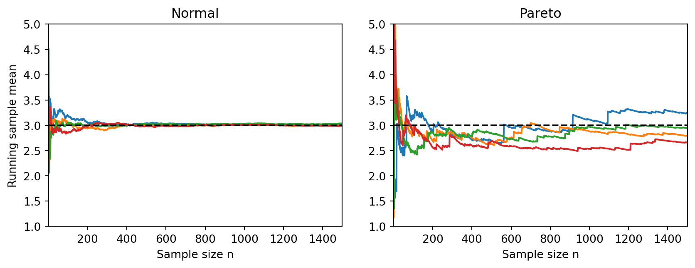

Estimators, Sampling Distributions, and Monte Carlo Experiments
Learning goals
After this chapter, you should be able to:
distinguish a statistical parameter, an estimator, and an observed estimate;
describe an estimator’s sampling distribution and interpret its standard error;
calculate and interpret bias, variance, mean squared error (MSE), and root mean squared error (RMSE);
explain why an unbiased estimator need not have the smallest MSE;
establish consistency for basic estimators and describe the role of moment assumptions;
design reproducible Monte Carlo experiments, distinguish sample size \(n\) from the number of repetitions \(B\), and quantify Monte Carlo uncertainty;
investigate the finite-sample behavior of estimators and confidence intervals using Python.
TipHow to use this chapter
Chapter 1 introduced the law of large numbers (LLN), the central limit theorem (CLT), and modes of convergence. Here we apply these tools to statistics computed from data. Before executing a simulation, write down what the theory predicts. After running it, distinguish what is a mathematical statement from what is only an approximation produced by finitely many simulated samples. As elsewhere in the course, understanding the statistics matters more than memorizing the Python syntax.
Reading: Wasserman (2004), All of Statistics, selected material from Chapters 6 and 9 (statistical inference and estimation). See the online book.
This week’s plan: Monday (2 November): estimators, sampling distributions, bias, variance, MSE, and consistency. Wednesday (4 November): asymptotic approximations, Monte Carlo design, and the coding lab.
Suppose we observe a random sample\(X_1,\ldots,X_n\) of independent, identically distributed (i.i.d.) random variables with common but generally unknown distribution \(F\). We write \(x_1,\ldots,x_n\) when referring to the numerical values that have actually been observed.
A parameter\(\theta=\theta(F)\) is a characteristic of the unknown distribution. Examples include its mean \(\mu=\mathbb E[X_1]\), variance \(\sigma^2=\operatorname{Var}(X_1)\), or a population quantile. Our goal is to use observed data to learn about \(\theta\).
NoteDefinition: estimator and estimate
An estimator (or estimation statistic) is a (measurable) function of the sample,
\[
\widehat\theta_n=g_n(X_1,\ldots,X_n).
\]
Because the inputs are random, \(\widehat\theta_n\) is itself a random variable. After observing \(x_1,\ldots,x_n\), the number \(g_n(x_1,\ldots,x_n)\) is the estimate (or realized value) of the estimator.
In practice we often use the same symbol \(\widehat\theta_n\) for the function and the resulting random variable, while \(\widehat\theta_{\mathrm{obs}}\) or a lowercase symbol denotes its observed value. This distinction is essential when we discuss probabilities or expectations of estimators.
Example: the sample mean. The natural estimator of \(\mu\) is
Both estimate the population variance \(\sigma^2\), but they have different finite-sample properties. We will see why.
TipExercise 1: what is random?
A sample of five measurements is \(x=(2,4,4,5,10)\). Calculate \(\overline x_5\), \(\widetilde s_5^2\), and \(s_5^2\). Which of these are realized estimates, and which mathematical expressions would be random variables before collecting the measurements?
1.2 The sampling distribution
Imagine repeatedly drawing new independent samples of the same size \(n\) from the same population. Each sample will usually produce a different estimate. The probability distribution of these possible values is the sampling distribution of \(\widehat\theta_n\).
This is not the distribution of a single observation \(X_i\). It is the distribution of a function of \(n\) observations. The sampling distribution tells us how much an estimation procedure fluctuates from sample to sample.
For i.i.d. observations with finite mean \(\mu\) and variance \(0<\sigma^2<\infty\),
For the sample mean, \(\operatorname{SE}(\overline X_n)=\sigma/\sqrt n\). When \(\sigma\) is unknown, \(S_n/\sqrt n\) is a common estimated standard error. A standard error measures variability across hypothetical samples; it is not the standard deviation of the individual data points.
1.2.1 Experiment 1: draw many sample means
We generate \(B=8{,}000\) independent samples from \(N(3,1)\) for several sample sizes. Each row of the simulated array is one sample. We compare the resulting sampling distributions with their exact normal densities.
mu =3sigma =1B =8000sample_sizes = [5, 30, 100]fig, axes = plt.subplots(1, 3, figsize=(9, 3))for i inrange(3): n = sample_sizes[i]# Simulate sample means samples = rng.normal(mu, sigma, size=(B, n)) means = samples.mean(axis=1)# Histogram axes[i].hist(means, bins=40, density=True)# Theoretical normal distribution x = np.linspace(2, 4, 400) y = stats.norm.pdf(x, mu, sigma / np.sqrt(n)) axes[i].plot(x, y, color="black")# True population mean axes[i].axvline(mu, color="black", linestyle="--") axes[i].set_title(f"n = {n}") axes[i].set_xlabel("Sample mean")axes[0].set_ylabel("Density")plt.tight_layout()plt.show()

Figure 1: Sampling distributions of the mean under normal sampling. Each histogram uses 8,000 independent samples; the black curve is the exact sampling density.
Increasing \(n\) makes the distribution of the estimator more concentrated around the parameter. Increasing \(B\), by contrast, only makes our picture of that distribution more accurate; it does not make the estimator itself more precise.
ImportantTwo different sample sizes
\(n\): observations in one random sample. Changing \(n\) changes the estimator’s sampling distribution and generally its statistical accuracy.
\(B\): independently repeated samples in the computer experiment. Changing \(B\) changes the accuracy of our Monte Carlo approximation to the sampling distribution.
2 Assessing an estimator: bias, variance, and MSE
2.1 Bias and unbiasedness
There are often several possible estimators for the same parameter. To assess their performance, we first ask whether an estimator tends systematically to be above or below its target.
NoteDefinition: bias
The bias of an estimator \(\widehat\theta_n\) for \(\theta\) is
provided the expectation exists. The estimator is unbiased if its bias is zero for every parameter value in the model. It is asymptotically unbiased if \(\operatorname{Bias}(\widehat\theta_n;\theta)\to0\) as \(n\to\infty\) for each fixed \(\theta\).
The sample mean is unbiased whenever \(\mu=\mathbb E[X_1]\) exists:
Unbiasedness is a property of the procedure over repeated sampling. It does not mean that an estimate from one particular sample must equal the true value.
2.2 Why variance matters, too
An estimator can be unbiased yet fluctuate considerably between samples. Conversely, an estimator can be somewhat biased but vary much less. The relevant distinction is between the center of its sampling distribution and its spread.

Figure 2: A target analogy for estimators: low bias and low variability; low bias and high variability; nonzero bias and low variability.
2.3 Mean squared error and its decomposition
Variance measures deviations from an estimator’s own expectation. Usually we care instead about deviations from the unknown parameter. This leads to the mean squared error.
Its square root is the root mean squared error, \(\operatorname{RMSE}(\widehat\theta_n)=\sqrt{\operatorname{MSE}(\widehat\theta_n)}\). The RMSE has the same physical units as \(\theta\).
Add and subtract \(\mathbb E[\widehat\theta_n]\) inside the square. Because the centered cross-term has expectation zero,
This bias–variance decomposition is a central theme of statistical estimation. In particular, when the estimator is unbiased, its MSE equals its variance. The decomposition also explains why having the smallest bias is not by itself a guarantee of good estimation.
TipExercise 2: establish the identity
Expand the square in the display above, identify the vanishing cross-term, and explain why the MSE is always at least the squared bias.
2.3.1 Experiment 2: compare estimators for the sample variances
Let \(X_1,\ldots,X_n\) be i.i.d. with finite variance \(\sigma^2\). Recall
Take \(X_i\sim N(0,2^2)\), so the parameter is \(\sigma^2=4\). We simulate the two estimators on the same samples, which makes their comparison less affected by Monte Carlo noise.
sigma2, B =4.0, 20_000rows = []for n in [5, 20, 100]: x = rng.normal(0, np.sqrt(sigma2), size=(B, n)) estimates = {"Divisor n": x.var(axis=1, ddof=0),"Divisor n-1": x.var(axis=1, ddof=1)}for name, values in estimates.items(): theory_bias =-sigma2 / n if name =="Divisor n"else0.0 theory_mse = ((2*n -1) * sigma2**2/ n**2if name =="Divisor n"else2* sigma2**2/ (n -1)) rows.append({"n": n, "Estimator": name,"MC bias": np.mean(values - sigma2),"Theory bias": theory_bias,"MC MSE": np.mean((values - sigma2)**2),"Theory MSE": theory_mse})variance_results = pd.DataFrame(rows)display(variance_results.round(3))
Table 1: Monte Carlo bias and MSE for the two variance estimators. Compare the simulated values with the analytical predictions.
n
Estimator
MC bias
Theory bias
MC MSE
Theory MSE
0
5
Divisor n
-0.792
-0.80
5.843
5.760
1
5
Divisor n-1
0.010
0.00
8.150
8.000
2
20
Divisor n
-0.202
-0.20
1.578
1.560
3
20
Divisor n-1
-0.003
0.00
1.703
1.684
4
100
Divisor n
-0.042
-0.04
0.318
0.318
5
100
Divisor n-1
-0.002
0.00
0.323
0.323
Discrepancies between simulated and theoretical numbers are not necessarily errors. We use finitely many simulations, so the Monte Carlo estimates themselves fluctuate.
In this simple example, it is actually possible to derive bias and variance of the estimators analytically by hand. Indeed, we can prove the key expectation by using the identity
For \(n\geq2\), the biased version actually has a smaller MSE than the unbiased one. This is a finite-sample bias–variance trade-off, not an argument that one normalization is always preferable: the choice can depend on the purpose, interpretation, and assumptions.
WarningScope of the result
The expectation identities hold for any i.i.d. sample with finite variance. The two displayed variance and MSE formulas use the additional assumption that the observations are normally distributed. We will not silently apply them to arbitrary distributions.
3 Consistency and convergence rates
3.1 Consistency: what happens with more data?
In Chapter 1, we distinguished convergence in probability, almost sure convergence, and convergence in mean square. These are now properties of sequences of estimators.
NoteDefinition: consistency
An estimator sequence \(\widehat\theta_n\) is (weakly) consistent for \(\theta\) if
It is strongly consistent if \(\widehat\theta_n\xrightarrow{a.s.}\theta\) and mean-square consistent if \(\mathbb E[(\widehat\theta_n-\theta)^2]\to0\).
Both strong consistency and mean-square consistency imply weak consistency. Neither of the first two notions automatically implies the other. Mean-square consistency can be checked by proving that the MSE tends to zero, since Markov’s inequality gives
so \(\overline X_n\) is mean-square consistent as well. Notice that unbiasedness and consistency answer different questions: bias concerns the estimator’s expectation at fixed \(n\); consistency concerns concentration around \(\theta\) as \(n\) grows.
Unbiased does not imply consistent. Imagine estimating \(\mu\) by \(\widehat\mu_n=X_1\) for all \(n\). This is unbiased, but its distribution and variance do not change with \(n\); in a non-degenerate population, it cannot be consistent. Conversely, \(\widetilde S_n^2\) is biased for finite \(n\) but is consistent for \(\sigma^2\) when \(\mathbb E[X_1^2]<\infty\).
3.1.1 Experiment 3: normal and Pareto sample-mean paths
For scale \(x_m>0\) and shape \(\alpha>0\), its distribution function is
If \(\alpha>1\), \(\mathbb E[X]=\alpha x_m/(\alpha-1)\) is finite. But if \(1<\alpha\leq2\), \(\operatorname{Var}(X)=\infty\). In particular, for \(x_m=1\) and \(\alpha=1.5\), \(\mu=3\) but the variance is infinite.
The strong law of large numbers still applies to the sample mean in this example, whereas \(\mathbb E[(\overline X_n-\mu)^2]\) is infinite for every finite \(n\). Thus an estimator can be strongly consistent even though its MSE is infinite.
Draw four independent growing samples from each distribution. Both populations have mean 3. The normal population has variance 1; the Pareto population has infinite variance.
N =1500n = np.arange(1, N +1)fig, axes = plt.subplots(1, 2, figsize=(9, 3.5))names = ["Normal", "Pareto"]for i inrange(2):for j inrange(4):if i ==0: x = rng.normal(3, 1, N)else: x = rng.pareto(1.5, N) +1 running_mean = np.cumsum(x) / n axes[i].plot(n, running_mean) axes[i].axhline(3, color="black", linestyle="--") axes[i].set_title(names[i]) axes[i].set_xlabel("Sample size n") axes[i].set_xlim(1, N) axes[i].set_ylim(1, 5)axes[0].set_ylabel("Running sample mean")plt.tight_layout()plt.show()

Figure 3: Four trajectories of cumulative sample means from a normal population (left) and a Pareto population with finite mean but infinite variance (right). The dashed line marks the common population mean 3.
A sample path plot demonstrates possible behavior, but four paths cannot prove an asymptotic property. Also, extreme Pareto draws can cause a sample mean to jump sharply even when \(n\) is large. A standard \(\sqrt n\) normal approximation is not justified here.
TipExercise 3: consistency versus MSE
Explain why the Pareto sample mean above is strongly consistent even though its MSE does not converge to zero. Which assumption of the ordinary finite-variance central limit theorem is violated?
4 Asymptotic sampling distributions and intervals
4.1 The central limit theorem as an estimation tool
For i.i.d. observations with \(\mathbb E[X_1]=\mu\) and \(0<\operatorname{Var}(X_1)=\sigma^2<\infty\), the central limit theorem states
It follows that, for sufficiently large \(n\), the sampling distribution of \(\overline X_n\) is approximately normal with mean \(\mu\) and variance \(\sigma^2/n\). For normal observations this is an exact result; for other finite-variance populations it is generally an approximation, and its accuracy depends on \(n\) and the population’s shape.
Many other estimators have limiting sampling distributions of the form
where \(v^2\) is called the asymptotic variance of the scaled estimator. Such a result needs to be established for the particular estimator; it does not hold automatically for every statistic.
4.2 4.2 Estimated standard errors and Slutsky’s theorem
Usually \(\sigma\) is unknown. If \(S_n\xrightarrow{P}\sigma>0\), Slutsky’s theorem allows us to replace the population standard deviation by a consistent estimate:
where \(z_{1-\alpha/2}\) is the corresponding standard normal quantile. This interval has asymptotic coverage \(1-\alpha\) under the stated assumptions. With normal observations and known\(\sigma\), replacing \(S_n\) by \(\sigma\) instead produces an exact normal-theory interval. We will not develop hypothesis tests here; the point is to investigate the sampling behavior of an estimator and an interval procedure.
4.3 4.3 Example: a machine producing components
Manufacturing fluctuations are approximately normal with known standard deviation \(\sigma=0.18\) mm, but the actual mean \(\mu\) may drift. We observe \(n\) independently measured parts and estimate \(\mu\) using \(\overline X_n\).
Because \(\overline X_n\sim N(\mu,0.18^2/n)\), we have:
Number of parts \(n\)
Standard error \(0.18/\sqrt n\) (mm)
\(\operatorname{MSE}(\overline X_n)\) (mm\(^2\))
9
0.060
0.003600
144
0.015
0.000225
A sample of 144 parts rather than 9 reduces the standard error by a factor of four. With known \(\sigma\), the exact \((1-\alpha)\) confidence interval is
The interval is random because \(\overline X_n\) is random. Coverage refers to the proportion of intervals containing the fixed true \(\mu\) over repeated sampling—not to a probability distribution assigned to \(\mu\) after observing a single sample.
TipExercise 4: confidence interval width
For \(\alpha=0.05\), calculate the total width of the confidence interval with known \(\sigma=0.18\) for \(n=9\) and \(n=144\). Explain why the widths are deterministic in this example, even though the interval endpoints are random.
5 Monte Carlo experiments: theory with a computer
5.1 The basic design
A Monte Carlo experiment approximates a theoretical quantity by repeated simulation under a stated data-generating mechanism. For estimator evaluation, one repetition consists of a complete sample of size \(n\), followed by calculating the estimate.
Specify the population: distribution \(F\), its parameters, and the target \(\theta(F)\).
Specify the estimator: a function \(g_n\) applied to each random sample.
Choose the design: sample sizes \(n\), number of replications \(B\), and a reproducible random seed.
Repeat \(B\) times: generate fresh i.i.d. data of size \(n\) and record \(\widehat\theta_n^{(b)}\) for each \(b=1,\ldots,B\).
Summarize: compare the empirical sampling distribution, bias, variance, MSE, RMSE, or interval coverage with the theory.
Check numerical uncertainty: Monte Carlo estimates have their own standard errors and must not be treated as exact numbers.
5.2 5.2 Approximating bias, variance, and MSE
Let \(\widehat\theta^{(1)},\ldots,\widehat\theta^{(B)}\) be independent simulated estimates, and write \(\overline{\widehat\theta}_B=B^{-1}\sum_{b=1}^B\widehat\theta^{(b)}\). Define
For an unbiased estimate of the variance across replications, software usually uses \(1/(B-1)\) instead. That convention is also valid, but the displayed decomposition is then no longer an exact identity at finite \(B\).
The standard error of the estimator describes variation across actual data samples of size \(n\). The Monte Carlo standard error describes how accurately a computer experiment with \(B\) simulated samples approximates a summary of that sampling distribution.
For a simulated mean of estimates, a suitable MCSE estimate is
This formula requires a finite variance across independent replications. It also applies to the simulated bias because subtracting the known constant \(\theta\) does not change its MCSE.
5.2.1 Experiment 5: Monte Carlo error versus sample size
Suppose \(X_i\sim N(2,1)\) and we estimate \(\mu=2\) with \(\overline X_n\). Its bias is exactly zero and its standard error is \(1/\sqrt n\). Estimate its bias using different values of \(B\) while keeping \(n=20\) fixed.
n =20rows = []for B in [200, 1_000, 10_000]: estimates = rng.normal(loc=2, scale=1, size=(B, n)).mean(axis=1) result = mc_summary(estimates, truth=2) rows.append({"n": n, "B": B, "MC bias": result["bias"],"MCSE of bias": result["mcse_of_mean"],"Empirical SE of estimator": np.std(estimates, ddof=1),"Theoretical SE": 1/ np.sqrt(n)})display(pd.DataFrame(rows).round(4))
Table 2: Estimated bias and its Monte Carlo standard error. The true bias is zero; more replications make the simulation estimate less noisy.
n
B
MC bias
MCSE of bias
Empirical SE of estimator
Theoretical SE
0
20
200
0.0119
0.0144
0.2031
0.2236
1
20
1000
-0.0078
0.0072
0.2267
0.2236
2
20
10000
-0.0002
0.0023
0.2251
0.2236
If we repeat this whole experiment, the displayed Monte Carlo estimates will change. Moreover, increasing \(B\) does not reduce the actual standard error of \(\overline X_n\); that requires increasing \(n\).
5.3 Estimating interval coverage
We can also evaluate uncertainty procedures through simulation. If \(I^{(b)}\) is the interval computed from the \(b\)-th sample, define the coverage indicator
\[C_b=\boldsymbol{1}\{\theta\in I^{(b)}\}.\]
The simulated coverage is \(\widehat c=B^{-1}\sum_b C_b\). As the indicators are Bernoulli variables from independent replications, their estimated Monte Carlo standard error is
\[
\widehat{\operatorname{MCSE}}(\widehat c)
\approx\sqrt{\frac{\widehat c(1-\widehat c)}{B}}.
\]
This uncertainty concerns the estimated coverage. It is not the confidence interval’s width or the standard error of the original sample mean.
5.3.1 Experiment 6: coverage under exact normality and skewness
We construct nominal 95% normal-based intervals for means from (a) a normal population and (b) an exponential population. Both populations have mean \(1\) and standard deviation \(1\). For each population we contrast an interval using the known standard deviation with the more practical version plugging in \(S_n\), keeping the normal critical value in both cases. The known-standard-deviation interval has exact 95% coverage under normal sampling. The plug-in version is only asymptotically justified, even under normal sampling, and can behave poorly at small \(n\).
B =12_000z = stats.norm.ppf(0.975)rows = []for distribution in ["Normal", "Exponential"]:for n in [5, 20, 100]:if distribution =="Normal": samples = rng.normal(1, 1, size=(B, n))else: samples = rng.exponential(scale=1, size=(B, n)) means = samples.mean(axis=1)for sd_method, scale in [("Known SD", np.ones(B)), ("Estimated SD", samples.std(axis=1, ddof=1))]: half_width = z * scale / np.sqrt(n) covered = (means - half_width <=1) & (1<= means + half_width) c_hat = covered.mean() rows.append({"Population": distribution, "n": n,"SD used": sd_method, "Coverage": c_hat,"MCSE": np.sqrt(c_hat * (1- c_hat) / B)})coverage_results = pd.DataFrame(rows)display(coverage_results.round(4))
Table 3: Simulated coverage of 95% normal-based intervals with known versus estimated standard deviation. Even normal data do not make the plug-in z-interval exact at small n.
Population
n
SD used
Coverage
MCSE
0
Normal
5
Known SD
0.9535
0.0019
1
Normal
5
Estimated SD
0.8788
0.0030
2
Normal
20
Known SD
0.9501
0.0020
3
Normal
20
Estimated SD
0.9339
0.0023
4
Normal
100
Known SD
0.9472
0.0020
5
Normal
100
Estimated SD
0.9440
0.0021
6
Exponential
5
Known SD
0.9566
0.0019
7
Exponential
5
Estimated SD
0.8149
0.0035
8
Exponential
20
Known SD
0.9533
0.0019
9
Exponential
20
Estimated SD
0.9056
0.0027
10
Exponential
100
Known SD
0.9509
0.0020
11
Exponential
100
Estimated SD
0.9359
0.0022
A useful diagnostic is to ask whether the difference from \(0.95\) is large relative to its MCSE. The difference between the two interval constructions is especially clear for \(n=5\): estimating the standard deviation introduces an additional source of finite-sample approximation error. Under normal sampling, using a suitable \(t\) rather than normal quantile would give an exact interval, but that refinement is not our focus here. If a coverage discrepancy is much larger than its MCSE, simply increasing Monte Carlo replications will not fix the underlying approximation error. Increasing sample size \(n\) may help, provided the LLN and CLT assumptions apply.
WarningDo not confuse two sources of error
A finite-sample approximation can be systematically inaccurate even if it has been simulated a million times. More Monte Carlo replications reduce numerical simulation uncertainty; they do not make an invalid statistical approximation valid.
6 Coding Lab
Please find the Jupyter Notebook for the coding lab exercise of Chapter 2 below.